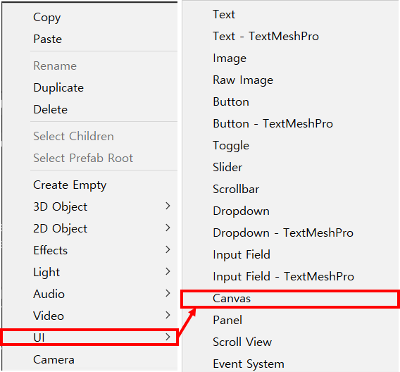
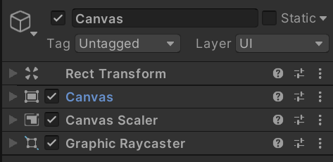
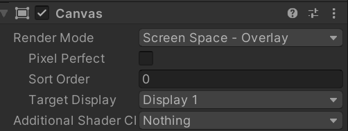
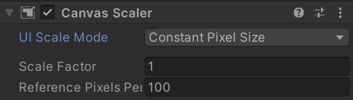
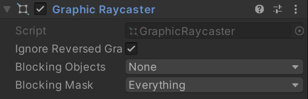

* UGUI의 기본적인 컴퍼넌트 Canvas에 대해 정리한 글 입니다.
* 개인적인 공부 내용을 기록한 글이기에, 잘못된 내용이 있을 수 있습니다.
#Canvas
* EventSystem
* Canvas Component
** Rect Transform
** Canvas
** Canvas Scaler
** Graphic Raycaster
#Canvas
Canvas(캔버스)는 모든 UI 요소들의 최상위 요소로, UI는 모두 Canvas의 자식 요소로 존재합니다. Hierarchy 영역에서 오른쪽마우스 → UI → Canvas 를 클릭해 생성하거나, 그냥 Text Image Button 등 UI 요소를 생성하면 자동으로 생성됩니다.

* EventSystem
Canvas를 생성하면 자동으로 EventSystem 오브젝트가 Scene에 배치되는데, 이는 캔버스를 클릭 시 발생하는 이벤트를 관리하는 요소입니다.
* Canvas Component
캔버스를 생성하면 기본적으로 Rect Transform , Canvas , Canvas Scaler, Graphic Raycaster 가 붙여져서 생성됩니다. 각 항목들의 주요 기능들을 간략하게 정리하고 넘어가도록 하겠습니다.

** Rect Transform
캔버스의 위치를 결정하는 컴퍼넌트 입니다. Transform 컴퍼넌트를 사용해 위치를 나타내는 일반적인 오브젝트와는 달리, UI는 Rect Transform을 사용합니다. Rect Transform에 대해서는 추후에 자세하게 정리 하도록 하겠습니다.
** Canvas

Render Mode - 캔버스의 모드를 정하는 프로퍼티 입니다. 보통 고정 UI인 Screen Space - Overlay를 사용합니다.
Pixel Perfect - 캔버스를 픽셀(Pixel) 그래픽에 최적화 시켜 주는 프로퍼티 입니다.
Sort Order - 캔버스의 우선순위를 정합니다. Sort Order의 수치가 높을수록 캔버스를 더 앞에 출력해 줍니다.
Target Display - 캔버스를 출력할 모니터(Display)를 정합니다.
** Canvas Scaler

UI Scale Mode - 캔버스 UI를 해상도에 따라 출력할 방식을 설정하는 프로퍼티 입니다.
- Constant Pixel Size : 해상도의 변화에 관계없이 항상 동일한 캔버스를 출력합니다.
- Scale With Screen Size : 해상도에 따라 유연하게 변하는 캔버스를 출력합니다. (보통 이 항목을 사용합니다.)
- Constatn Physical Size : 모니터의 DPI에 맞는 캔버스를 출력합니다. (거의 사용되지 않습니다.)
** Graphic Raycaster

캔버스 안에 특정 UI (버튼, 이미지, 텍스트 등..) 을 클릭 했을 때 반응을 담당하는 프로퍼티입니다.
Graphic Raycaster 항목을 꺼주면, 마우스 클릭을 감지하지 못합니다.